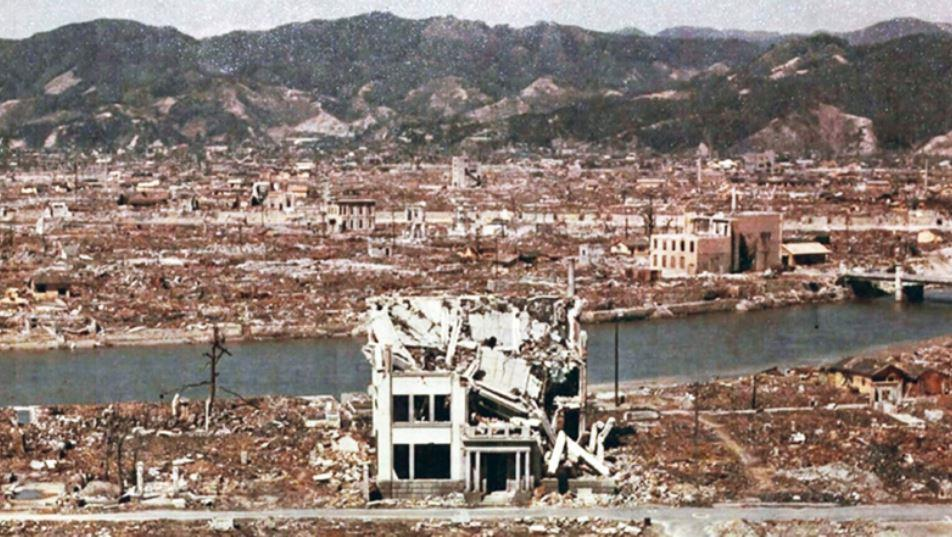
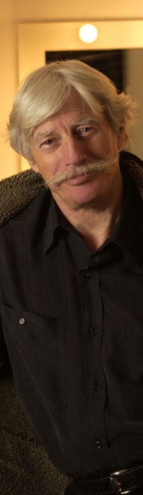
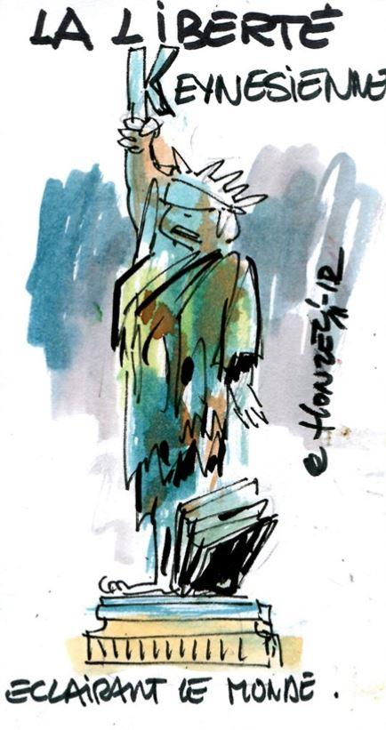
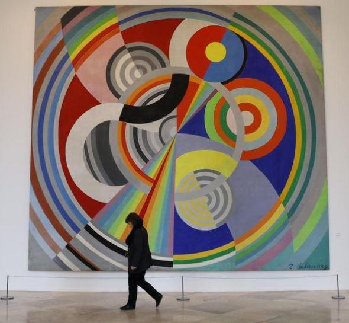
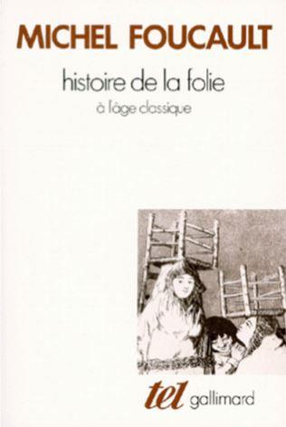

L’après-guerre est le carrefour temporel où se rejoignent enfin toutes les voies qui conduisent au mondialisme comme par enchantement, par un de ces hasards de l’histoire où tout semble concourir dans un même sens, nous porter tous vers un même port, donnant l’illusion que l’odyssée de l’humain a vraiment un terme, confortant en cela, durant un certain laps de temps, l’utopie des millénaristes.
L’après-guerre, ce fut évidemment la hantise, le dégout absolu de la guerre, et on le comprend. Il faut quand même se rappeler qu’on partait au front en chantant, à peine trente ans plus tôt. Après 1945, le nationalisme, jugé coupable de massacres de masse, qui plus est en récidive, est traduit devant le tribunal de l’histoire. Sur les ruines encore fumantes de la plus grande tragédie que l’Europe n’ait jamais vécue, on se préoccupe de rebâtir un monde débarrassé de la guerre, de la haine entre les peuples, du conflit entre les États. Bref, en un mot, débarrassé du nationalisme. L’insuffisante médiation internationale, du fait de l’absence d‘un droit interétatique, coercitif et vraiment dissuasif, figure en bonne place parmi les causes des deux récents conflits. Feu la SDN était vouée à l’impuissance car désarmée. L’ONU, dotée d’un conseil de sécurité, mais aussi d’une force d’interposition propre, et de la faculté de mandater des coalitions militaires internationales pour s’opposer aux agressions, fut une première réponse. Mais on va aller bien au-delà de la concertation internationale pour résoudre les tensions. On va promouvoir une collaboration permanente des nations sur des sujets d’envergure mondiale. Et l’on va ainsi échafauder une mille-feuille d’institutions internationales plus ou moins contraignantes, plus ou moins efficientes, plus ou moins puissantes : OCDE, FAO, Banque Mondiale, FMI, UNESCO, BIT, OMS, GATT puis OMC, Cour de Justice Internationale, Haut-commissariat aux migrations etc… Il faut qu’à force d’échanger, de coopérer, les nations s’imprègnent d’une conscience mondiale, qui dépasse le cadre restreint de leurs intérêts particuliers, qui transcende leur égo. L’Europe, considérée comme la mère de toutes les tragédies, de tous les désastres, se voit parée d’une attention particulière. Le nationalisme belliciste et mortifère, c’’est avant tout celui des puissances Européennes, l’Allemagne et l’Italie bien sûr, mais également la France, la Grande Bretagne, et les autres… Ce sont ces pays, tous suspects aux yeux des mondialistes, que l’on surveille en particulier, et que l’on pousse à s’entendre une fois pour toutes, en les sommant de se fondre dans le cadre d’une Union Européenne, même si elle est encore en devenir et ne s’appelle pas comme ça au sortir de la Deuxième Guerre mondiale.
Mais le mal absolu ne peut être vaincu par des aménagements institutionnels, si complexes et novateurs soient-ils. Le mal doit être extirpé du cœur des hommes, une fois pour toutes. Au banc des accusés, les humiliations infligées aux vaincus de 14/18. Cette fois, on absout l’Allemagne, le Japon et l’Italie. La misère, les privations ont poussé les peuples à se haïr. C’est cette haine qui a promu Hitler et Mussolini au rang d’idoles, a armé leur bras et les a poussé à frapper. Alors, on inonde l’Europe de capitaux, à travers le plan Marshall, pour accélérer la reconstruction, remettre les peuples au travail. La guerre aura eu au moins un mérite : pour perfectionner la machine de mort, les ingénieurs auront fait faire un pas de géant à l’humanité.

Hiroshima
Télévision, radio portative, électroménager, font entrer l’occident dans un univers de confort, de bien-être de loisir et de culture pour tous encore jamais atteint dans l’histoire de l’humanité. Les nouveaux logements, érigés sur les ruines de la guerre, ont l’eau courante, l’électricité, le chauffage central, les sanitaires. Frigos, télés, machines à laver : la vie devient facile, pour les femmes en particulier. Le temps passé aux taches fastidieuses, pénibles, se réduit, il cède la place à l’information, la culture, les loisirs, le divertissement, le sport. Les lumières des villes attirent les jeunes comme des mouches, les campagnes sont désertées, de nouveaux quartiers poussent comme des champignons dans les périphéries. Mieux que quiconque, Jean Ferrat aura traduit, avec le talent qu’on lui connait, ce raz de marée sociétal que fut l’urbanisation galopante.
Ils quittent un à un le pays,
Pour s’en aller gagner leur vie
Loin de la terre où ils sont nés,
Depuis le temps qu’ils en rêvaient,
De la ville et de ses secrets,
Du formica et du ciné
Les vieux, ce n’était pas original,
Lorsqu’ils s’essuyaient machinal,
D’un revers de manche les lèvres,
Mais ils savaient fort à propos
Tuer la caille ou le perdreau,
Et manger la tomme de chèvre.
Pourtant, que la montagne est belle,
Comment peut-on imaginer,
En voyant un vol d’hirondelles,
Que le printemps vient d’arriver
Deux chèvres, et puis quelques moutons,
Une année bonne et l’autre non,
Et sans vacances et sans sorties,
Les jeunes veulent aller au bal,
Il n’y a rien de plus normal
Que de vouloir vivre sa vie
Leur vie ils seront flics ou fonctionnaires,
De quoi attendre sans s’en faire,
Que l’heure de la retraite sonne,
Il faut savoir ce que l’on aime, et rentrer dans son HLM,
Manger du poulet aux hormones.
Pour la première fois dans l’histoire, l’homme a le pouvoir de s’extirper de sa condition, du lien avec la nature et la contrainte qu’elle lui inflige depuis toujours. Du lien avec le village, la famille, qui tous deux bornent les horizons et constituent autant d’obligations. Le temps de la ruralité est cyclique, c’est un éternel retour aux mêmes gestes, aux mêmes taches, aux mêmes coutumes, aux mêmes servilités, aux mêmes promiscuités. La vie tourne en rond et se répète sans fin. La liberté, dans ce contexte, n’est qu’illusoire, car chacun est prisonnier d’une routine qui enferme, bouche les perspectives, réduit à la reproduction forcée des rites, des mœurs, des techniques. La vie des champs, c’est la nature qui dicte sa loi à l’homme, qui pense pourtant ma dominer. La ville, c’est le confort, les commodités, la facilité, c’est du temps de vie gagné sur la contrainte, bref c’est plus de temps libre. C’est surtout plus de liberté, tout court : l’homme urbain est noyé dans la multitude, c’est un anonyme aux yeux de tous les autres, tous également des anonymes. Il s’habille comme il veut, il voit qui il veut, sans rendre de compte à quiconque, sans obligation familiale ni d’aucune sorte. Il n’a pas de place à tenir, de rang à sauvegarder, il est libre de toute ascendance familiale, n’est pas tenu de représenter une hérédité. Il vit pour lui, et pour lui seul. Et le temps urbain ne revient jamais en arrière. La nouveauté, la technique en évolution permanente, la vitesse, la lumière, les images se bousculent sans cesse, les sens sont en permanence excités par les sons, les néons, les innovations. L’homme est plongé dans un nouvel univers totalement artificiel, entièrement conçu pour son confort et son divertissement. Un univers dompté, à son service, contrairement à la campagne où il subit les lois contraignantes de de la nature. Les envies, les plaisirs sont multitudes. On ne s’y ennuie jamais. On n’y rencontre jamais les mêmes personnes, on ne s’y sent pas à l’étroit dans les habitudes et les conventions. L’homme urbain est libéré des contraintes de sa communauté, c’est avant tout un individu, seul maitre de ses faits et gestes, de ses relations. Avec en plus, l’abondance à portée de main. Que rêver de plus ? C’est là qu’on peut vivre pleinement sa vie, la sienne, pas celle des autres. Et cela est normal, nous dit la chanson de Ferrat. C’est là qu’on pense pouvoir être pleinement soi-même, car on vit sans avoir à rendre de comptes. Mais comme la chanson l’entrevoit, le rêve se dissipe peu à peu, au contact de la réalité. L’homme devenu simple individu est seul, dans son HLM. Le système urbain l’a isolé, et accaparé : on le tue à la tâche, en le poussant à consommer, et consommer quoi ? Du poulet aux hormones, nous dit la chanson…
La vie de l’homme occidental devenu urbain change du tout au tout. L’urbanité, et l’abondance l’affranchissent de plusieurs contraintes ancestrales, de pesanteurs, des astreintes souvent rituelles aux quelles sa condition rurale l’attachait. C’est désormais un autre homme, aux possibilités démultipliées, aux connaissances et informations largement abondées, aux opportunités démultipliées. Une nouvelle condition humaine émerge du cauchemar de la deuxième guerre mondiale, elle devient la norme pour l’ensemble de la société. L’humain est donc passé, en quelques années, d’un cauchemar mortifère, au rêve de bonheur universel… et tout ça grâce au progrès scientifique, technique, qui donne corps au mythe de l’abondance. Grace aussi à l’instauration des états-providence, chargés de généraliser la prospérité et le bien-être pour tous, quand la misère avait lancé le peuple allemand à l’assaut du monde entier vingt ans avant.
Désormais, les fruits de la science, de la prospérité doivent profiter à tous, nul ne doit rester en marge du festin. L’abondance se répand ainsi à vue d’œil. Dès le début des années soixante, les programmes sociaux, ou encore de soutien à l’industrie, sont largement abondés. Le keynésianisme, à l’origine procédé de relance rapide d’une économie en récession grâce au recours au déficit budgétaire et de l’intervention de l’état dans l’économie, devient la règle absolue, même en temps de croissance : l’état se pose en filet de sécurité permanent pour les activités économiques, les entreprises et les ménages.
L’homme de l’après-guerre évolue donc dans un univers où il est maitre de la nature, désormais totalement domestiquée, à son service, où les taches fastidieuses lui sont largement simplifiées par le machinisme généralisé, où l’abondance est à portée de main, où la misère est épargnée à la plupart.
C’est une nouvelle humanité qui émerge du second conflit mondial, elle rêve de fin de l’histoire, elle qui revient des horreurs de l’histoire. Les conditions économiques, matérielles, sociologique, politiques, sociales d’un changement profond de condition humaine se sont rencontrées en même temps, au même moment de l’histoire. Elles poussent à une émancipation de l’humain par rapport à la transmission, aux racines, aux valeurs traditionnelles, aux traditions, à la morale commune. L’homme devient avant tout un individu autonome, centré sur lui-même, qui pense pouvoir se détacher de tout ce qui le contraint, l’oblige et le conditionne depuis la nuit des temps : la nature, la famille, le village, l’Église. Ce sont ces quatre frontières qui bornent son horizon, lui imposent des contraintes, des interdits, des tabous, des frustrations.
Pour mesurer cette volonté de s’affranchir des contraintes, de se libérer de la nature et du réel, il est intéressant de voir les arts évoluer, durant cette période. C’est en ce temps-là que l’art abstrait s’impose comme la quintessence de l’évolution esthétique contemporaine : Mondrian, Pollock, Poliakoff et bien d’autres vont au bout de l’idée hégélienne d’un art qui purifierait l’esprit, qui se détacherait ainsi de la matière. Adieu donc les portraits, les paysages, l’art ne doit plus s’appuyer sur la réalité ni la nature comme un boiteux sur une béquille, il doit être l’expression de l’esprit humain détaché de tout ce qui le contraint, et en particulier du monde extérieur. Il doit s’affranchir des contraintes de lumière, de lignes, de perspective, mais exprimer le pur produit du cerveau de l’homme, débarrassé du réel qui l’emprisonne dans des normes, des règles et des limites.
À travers l’art contemporain, l’homme se fait Dieu, il réinvente un univers à part, artificiel, celui qui siège dans son esprit. Ce faisant, l’art contemporain est aussi le reflet de l’hypertrophie de l’ego : l’artiste délivre le produit de son esprit, bien souvent sibyllin aux yeux des autres, car quoi de plus indéchiffrable que les profondeurs du cerveau de chacun aux yeux des autres ?
D’autant que l’art contemporain ne s’embarrasse pas d’indices, de métaphores, de clés de compréhension : il ne délivre pas de message, fut-ce sous une forme codée et mystérieuse aux yeux des autres. C’est donc la porte ouverte à tout, un art nihiliste, où chacun montre ce qu’il veut sans même chercher à se faire comprendre, ni même à se rendre agréable à l’œil des spectateurs. C’est la manifestation éclatante de la toute-puissance de l’ego, affranchi de toutes les contraintes habituelles de la figuration, et jusqu’à celle de plaire, d’être agréable à l’œil ou compris du public. L’art abstrait, c’est le paroxysme de la puissance de l’ego de l’artiste, que l’on finit par admirer parce que lui a réussi à imposer sa propre vision aux autres, sans rien rendre ni aux canons de la beauté, ni aux gouts et à l’entendement du public.
L’intelligentsia de l’époque va bien sur emboiter le pas de ce que ces nouveaux urbains ressentent, et apporter sa caution à la pulsion émancipatrice qui se généralise dans la société. En cela, elle ne fera que reprendre, en les adaptant aux nouvelles formes de pensées, des idées très anciennes, antiques même. Diogène le cynique, de l’école cosmopolite d’Athènes, fut le premier à vouloir abolir les nations et unifier le monde, rejetant en cela non seulement les frontières physiques, mais également les frontières morales qui séparent le bien du mal, ou encore esthétiques qui séparent le beau du laid. Son disciple Aristippe affirmait que le bien se confondait avec le plaisir, et que pour trouver le bien, il fallait chercher la jouissance… Puis la Renaissance fournit son lot d’utopies mondialistes, de Thomas More à Erasme. Les Lumières furent la grande époque du mondialisme, avec Kant bien sûr, mais aussi Hegel, Diderot, Voltaire…
Au premier rang du néo-cosmopolitisme, figurent Sartre et les existentialistes. Et de la formule célèbre du philosophe de la nouvelle vague : chaque homme doit vivre sa vie comme une page blanche à remplir. La page blanche, c’est cet homme urbain, désormais anonyme, sans racine, sans passé, sans tribu, sans aucun déterminisme, qui ne devient lui-même que par l’accomplissement des actions qui façonnent son essence : l’existence précède l’essence.
La phrase fameuse de sa compagne, Simone de Beauvoir, « On ne nait pas femme, on le devient », illustre la portée du raisonnement, qui prétend abolir jusqu’à la réalité naturelle, physique, du sexe, pour en faire le produit d’un déterminisme social, et rêver d’en faire l’aboutissement d’un choix personnel : demain, on pourra se forger le sexe que l’on veut, et en changer à volonté.
L’après-guerre, c’est aussi le temps des structuralistes. Levi Strauss nous fait découvrir que, d’une civilisation à l’autre, on retrouve les mêmes mythes, les mêmes valeurs qui servent de viatique à une structure sociale donnée. Les valeurs ne relèvent d’aucune hiérarchie, d’aucune transcendance, d’aucune vérité universelle ni loi naturelle, elles ne font que chapeauter et justifier une structure civilisationnelle, bref justifient une organisation et une hiérarchie socio-politique particulière. Levi-Strauss révèle le relativisme des valeurs, par la diversité des mœurs et des civilisations qu’il place toujours sur un pied d’égalité, des plus primitives en apparence aux plus évoluées et sophistiquées.
Levi-Strauss parlait en outre à une époque où les voyages se démocratisaient, à grande échelle, et beaucoup de jeunes désormais ont vu le monde et sa diversité. Les années soixante sont d’ailleurs l’époque des « road-trip », de la quête d’évasion vers des horizons lointains, des peuples différents, et la littérature comme le cinéma vont exalter cette quête, de « Sur la route » de Kerouac à « Easy Rider » au cinéma. Les voyages donnent aux jeunes l’occasion de vérifier le prisme ethnologique de Levi-Strauss, ou plutôt de le valider : il devient la grille de lecture de toute une génération. À travers ce prisme, et au contact des autres peuples, se défont les certitudes, les aprioris sur ses propres valeurs. « Il est normal que chacun considère sa société comme meilleure que celle des autres » disait Levi-Strauss. Mais cette formule n’avait pas pour but de conforter la foi en ses valeurs, mais au contraire de la relativiser, de montrer que les autres aussi agissent de même, et n’ont pas de raisons moins valables que nous de croire dans la supériorité de leur civilisation.
Michel Foucault exaspère ce relativisme, dans « Histoire de la folie à l’âge classique ». La notion de folie elle-même ne relève pas d’une vérité intangible, partagée par toutes les civilisations et toutes les époques, mais est relative. Est considéré comme fou celui qui déroge, apparemment sans raison, aux tabous d’une société donnée. On peut être fou dans l’Antiquité romaine en partageant sa table avec des esclaves, en libérant des sacrifiés chez les aztèques, en, refusant de se lever le matin pour aller travailler aux Etats-Unis au cours du XXème siècle.
Michel Foucault, homosexuel assumé, et particulièrement avide de débauche à une époque où la tolérance était bien moins répandue qu’aujourd’hui, aurait voulu à travers ses théories faire évoluer les mentalités y compris quant à ses tendances personnelles, faire exploser les conventions et les interdits moraux. Derrida et Deleuze y allèrent de leur couplet.
L’après -guerre est l’entreprise, la plus vaste et déterminée jamais connue, de déconstruction de l’homme occidental, de l’abandon de l’héritage historique, de destruction des valeurs fondatrices de notre civilisation, pour conduire au triomphe absolu de l’individualisme. La pensée dominante de l’époque rejoint les évolutions sociales, sociétales, économiques et matérielles. L’homme désormais en mesure de s’affranchir de nombreuses contraintes de la vie, se dote d’une forme de pensée et d’éthique qui le lui permet, y compris sur un plan psychologique et moral.
Quand l’humanité toute entière se vit, un soir de juillet 1969, devant son écran de télévision réunie sur une petite planète, et derrière ce drapeau étoilé planté en un sol inconnu, l’heure de la mondialisation sonna comme une réalité tangible dans les esprits. L’homme dégagé de ses barrières ancestrales pouvait aller loin, bien plus loin qu’il n’a jamais été, et le monde n’était plus qu’un monde parmi tant d’autres. A quoi bon s’accrocher aux particularismes, relents désuets d’époques finissantes ? Déjà depuis vingt ans, les transports, et particulièrement l’aviation civile à la portée de tous, avaient rapproché les peuples, les avait amené à se côtoyer. La télévision fait vivre à tous les mêmes évènements, en tous points du monde.
Désormais, tous communient aux mêmes célébrations, endurent les mêmes tragédies, et cela contribue beaucoup à forger une conscience universelle.
(fin de la première partie – Suite dans le prochain numéro de Méthode)
Partager cette page